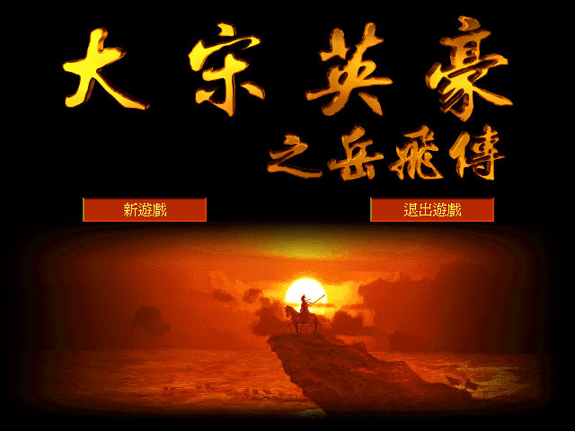
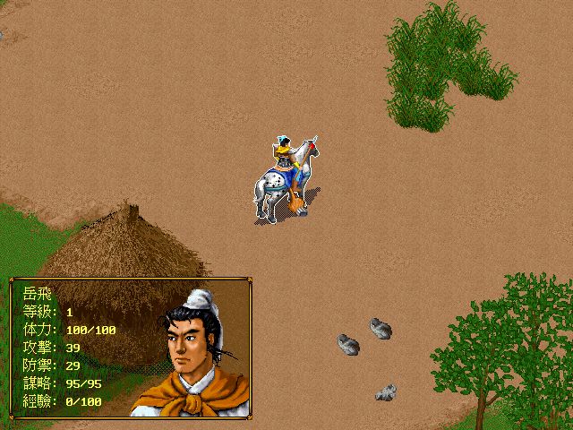

名稱：大宋英豪之岳飛傳／大宋英豪岳飛傳 (中文版) 簡介：智冠1999年出品的策略角色扮演遊戲 [待補]。

保護：無（放入光碟才有背景音樂） 密技：執行檔YFZ.EXE，在後面加上1～25，則點選新遊戲就可以直接跳到該關卡，但是等級 都還是1。第26關應該是測試關卡。 檔案：yfz_patch_final.rar = 非官方完美補丁，修正內容如下： 1.解決第7關任務限定30回合但實際無任何回合限制的問題。 2.解決第15關直接勝利的問題。 3.解決第19關第一部分任務限定50回合，但實際只有40回合的問題（官方補丁）。 4.解決第24關至第25關之間缺少商店的問題。 5.解決第25關岳飛形像變為牛的問題。 6.解決第25關張憲變為敵方主將的問題。 7.解決當修改game.ini的選項，設置遊戲分辨率為1024x768時，遊戲無法正常調整的問題。